知识蒸馏精读笔记
整理教师网络、学生网络、软标签、温度系数和蒸馏损失等知识蒸馏基础概念。
ReadPaper论文链接及论文十问解答 OpenMMLab RepDistill
工具
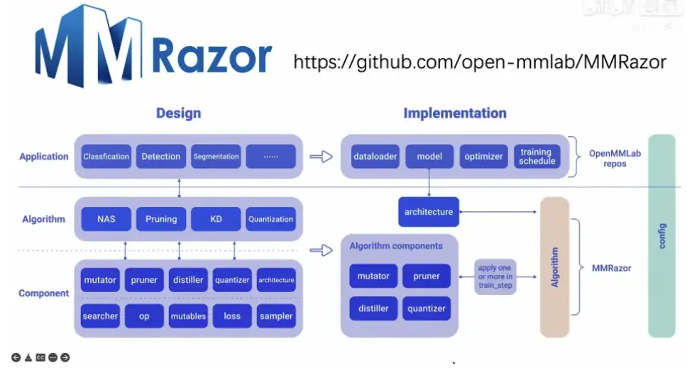
MMRazor是OpenMMLab团队做的一款模型压缩工具箱，包含了四个核心功能，包括剪枝，知识蒸馏，量化和神经架构搜索，都是一个命令行，一站式，一键就可以使用，非常方便。 MMDeploy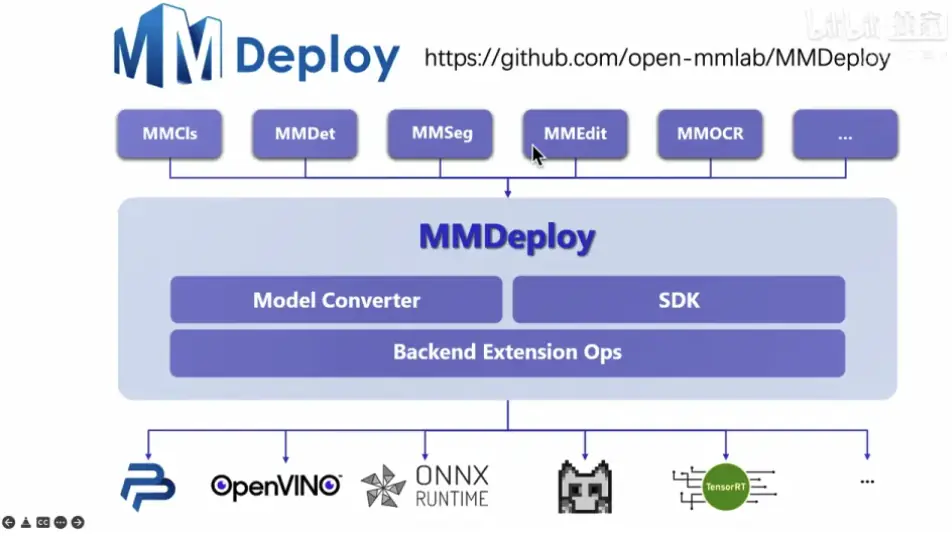
OpenMMLab团队还有一个模型部署工具箱MMDeploy，可以把OpenMMLab其他算法库的算法，比如说图像分类、目标检测、图像分割、OCR（光学字符识别）、文本识别，转成各大厂商支持的模型部署的中间格式，比如说Intel的OpenVINO，著名的ONNX，腾讯的优图实验室。就可以做这个终端应用的落地应用部署了。概述
知识蒸馏是把一个大的模型，我们称之为教师模型里的知识给它萃取蒸馏出来，把它浓缩到一个小的学生模型上。
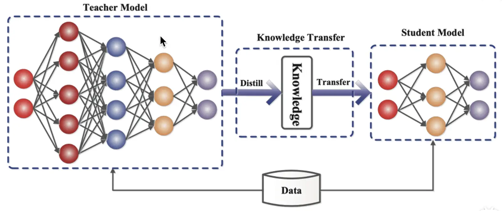
教师网络是一个比较大的神经网络，他把知识传递给了小的学生网络，这个过程称之为蒸馏或者迁移Transfer。 算法很大，而真正落地于终端的算力是有限的。这种算力非常受限的场景下，需要把大模型变成小模型，把小模型部署到终端上。这就是知识蒸馏的核心目的。 人工智能有一个非常前沿，非常有希望的方向，是预训练大模型。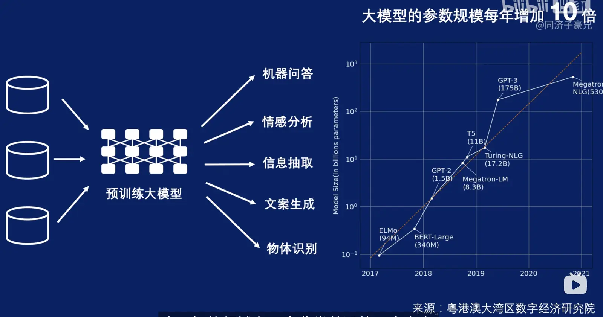
目前而言，要调用大模型的功能，必须是把大模型部署在云端，部署在某个数据中心，然后通过互联网，通过API来远程地通过云端访问，这样有网络延迟的问题，就得用知识蒸馏。轻量化网络
四个主要的技术路线
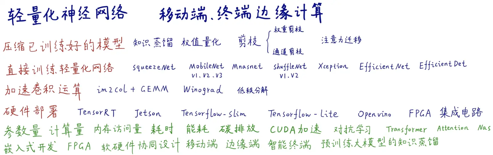
第一个方向是压缩一个已经训练好的臃肿的网络/模型 知识蒸馏就是这个路线的经典方法。 权值量化：把模型的权重从原来的32个比特数表示变成用int8，8个比特数来表示，节省内存，加速运算。 剪枝：去掉多余枝干，保留有用枝干。分为权重剪枝和通道剪枝，也叫结构化剪枝和非结构化剪枝，一根树杈一根树杈的剪叫非结构化剪枝，也可以整层整层的剪叫结构化剪枝。 第二个方向是在设计时就考虑哪些算子哪些设计是轻量化的 就是出生的时候就是一个轻量化的网络。 第三个方向是在数值运算的角度来加速各种算子的运算 比如im2col+GEMM，就是把卷积操作转成矩阵操作，矩阵操作是很多算法库里内置的功能，比如py，tf和matlab都有底层的加速到极致的矩阵运算的算子 第四个方向就是硬件部署 用英伟达的TensorRT库，把模型压缩成中间格式，部署在Jetson开发板上；Tensorflow-slim和Tensorflow-lite是tensorflow轻量化的生态；因特尔的openvino；FPGA集成电路也可以部署人工智能算法。 轻量化网络有很多需要考虑的内容：参数量、计算量···知识蒸馏作者
Distilling the knowledge in a neural network 神经网络中的知识蒸馏 Distilling（提炼） 这篇论文发表在nips（NeurIPS）2014顶级学术会议上。 Geoffrey Hinton：AI教父，深度学习三巨头之一，他用一己之力奠定了整个深度学习和神经网络时代的算法基础设施，比如说怎么训练神经网络用反向传播算法，怎么防止它过拟合用drop out，用什么数据集CIFAR-10，用什么优化器来训练用动量优化器，特别是在2012年，他领衔的AlexNet直接引爆了深度学习在计算机视觉领域的革命。获得2019年的图灵奖。 Jeff Dean：谷歌底层的搜索引擎，底层的大数据分布式处理框架MapReduce，整个的谷歌的大脑，包含熟知的tensor flow。
文章写作
知识的表示与迁移
核心idea： 如何让教师网络把知识迁移给学生网络 把左边的马图像喂给分类模型，会有很多类别，每个类别识别出一个概率，训练网络时，我们只会告诉网络，这张图片是马，其余是驴是汽车的概率都是0，这个就是hard targets，用hard targets训练网络，但这就相当于告诉网络，这就是一匹马，不是驴不是车，而且不是驴不是车的概率是相等的，这是不科学的。若是把马的图片喂给已经训练好的网络里面，网络给出soft targets这个结果，是马的概率为0.7，为驴的概率为0.25，为车的概率是0.05，所以soft targets就传递了更多的信息。
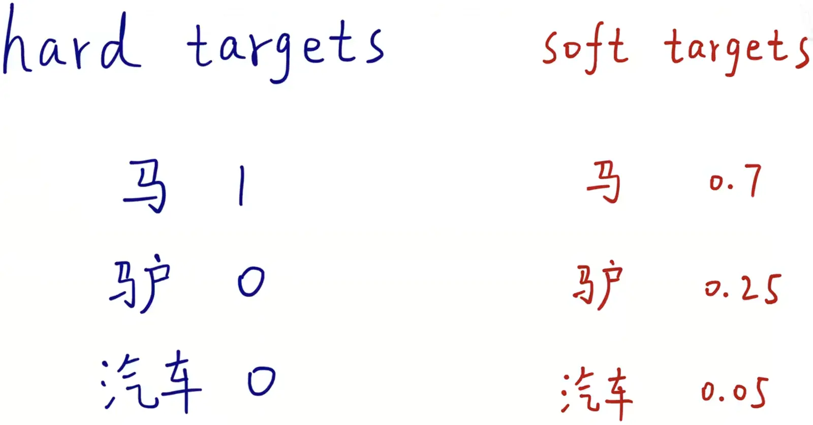
所以训练教师网络的时候就可以用hard targets训练，训练出了教师网络之后，教师网络对这张图片的预测结果soft targets能够传递更多的信息，就可以用soft targets去训练学生网络 总结 Soft Label包含了更多“知识”和“信息，像谁,不像谁,有多像,有多不像，特别是非正确类别概率的相对大小(驴和车)蒸馏温度T
引入蒸馏温度T，把原来比较硬的soft targets变的更软，更软的soft targets去训练学生网络，那些非正确类别概率的信息就暴露的越彻底，相对大小的知识就暴露出来，让学生网络去学
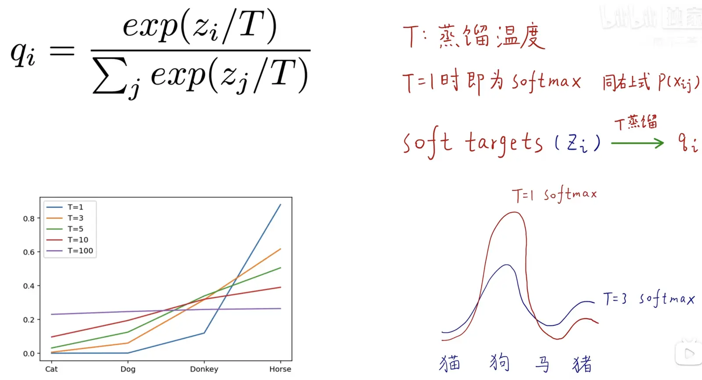
T为1，就是原softmax函数，softmax本来就是把每个类别的logic强行变成0-1之间的概率，并且求和为1，是有放大差异的功能，如果logic高一点点，经过softmax，都会变的很高。 T越小，非正确类别的概率相对大小的信息就会暴露的更明显；T越大，曲线就会变得更soft，高的概率给降低，低的概率会变高，贫富差距就没有了。 举个例子：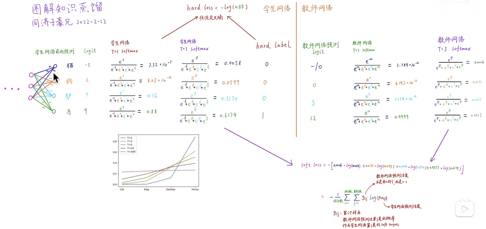
左侧学生网络是个神经网络，四个类别有一个线性分类层，猫的类别给出的分数logit为-5，狗的类别给出的分数logit为2，驴的类别给出的分数logit为7，马的类别给出的分数logit为9 logit对数，代表了线性分类器对每个类别的分数，分数越高，就意味着可能性越大。对logit做softmax运算可以得到置信度。 原来的softmax在图中是当T=1时的计算，从计算结果可以看出，有不同数量级，贫富差异较大；后验概率 当T=3时，e的指数的分母为3，得到的分布就更软了，基本是同一个数量级。但是还是几个数值均分布在0-1之间且和为1 右侧教师网络也是知识蒸馏的过程
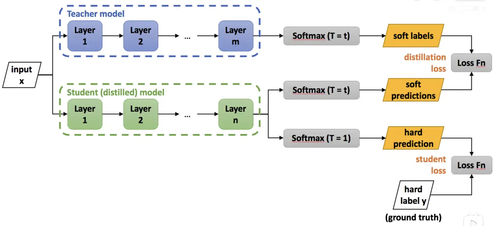
首先有一个已经训练好的教师网络（Teacher model），把很多数据（input）喂给教师网络，教师网络会给每个数据都给一个温度为T的时候的softmax（文中soft labels）；同时把数据（input）喂给学生网络（student model），也给学生网络一个温度T获得softmax（文中soft predictions），对soft labels和soft predictions做一个损失函数L（distillation loss也叫soft loss），让他们两个越接近越好，解释就是学生在模拟老师的预测结果；学生网络经过一个T=1的普通的softmax（文中的hard prediction）和hard label再做一个损失函数（student loss也叫hard loss），让他们两个越接近越好。所以这个学生网络既要在温度为T的预测结果和教师网络的预测结果尽可能接近，又要在温度为1的预测结果和标准答案更可能接近。那么损失函数就是由distillation loss和student loss这两项的加权求和。 计算hard loss：学生网络和hard label之间的传统交叉熵为-log（0.88）（因为马的类别为1，其他类别为0，只需要看马的类别 计算soft loss：同是交叉熵。如图 y（ij）表示的是第i个教师网络预测出第J类的概率作为学生网络第J类的soft targets 将两个损失函数求和，作为最终学生网络的损失函数，去训练学生网络。
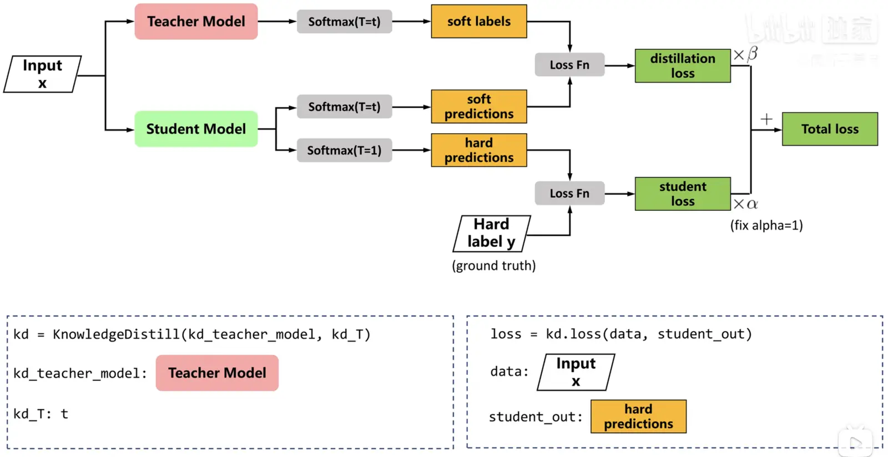
我们的目标就是微调学生网络的权重使得最终这个损失函数最小化。 通过梯度下降和反向传播的方法。 学生网络的所有权重怎么调整？ 总的损失函数相对于每一个权重的偏导数，求得这个偏导数之后，是一个反向传播的过程，一个链式求导反向传播的过程，求得偏导数之后，权重的变化导致最终的损失函数的变化。使得最终损失函数最小化。权重不断的迭代重复很多轮，得最终损失函数最小化，或者说收敛到一个低值，最终这个学生网络就训练好了。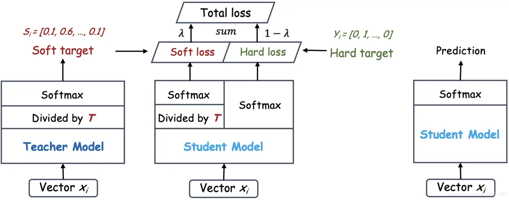
当学生网络训练完成之后，进行预测时，就不需要温度为T了，直接让它过一遍神经网络，温度为1的普通softmax，就可以获得最终的结果了。实验结果
这个实验结果先是在MNIST手写数字数据集上来进行了一个预实验，效果非常好，而且发现知识蒸馏有一个附带的效果。 知识蒸馏有一个附带的效果：假如用没有3的mnist手写数据集去训练学生网络，但是训练教师网络的时候是用的所有类别去训练的，教师网络也会将3的知识迁移给学生网络，虽然学生网络从来没见过3这个类别样本，但是最终学生网络也能预测3。 所以就是一个少样本甚至零样本的学习，可以通过知识蒸馏来实现。 机器学习（李宏毅老师）
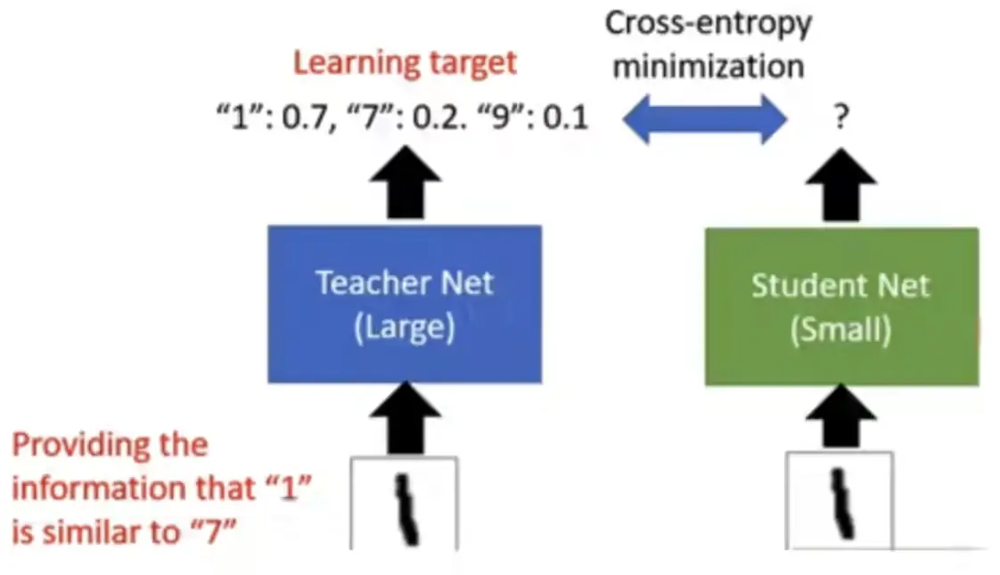
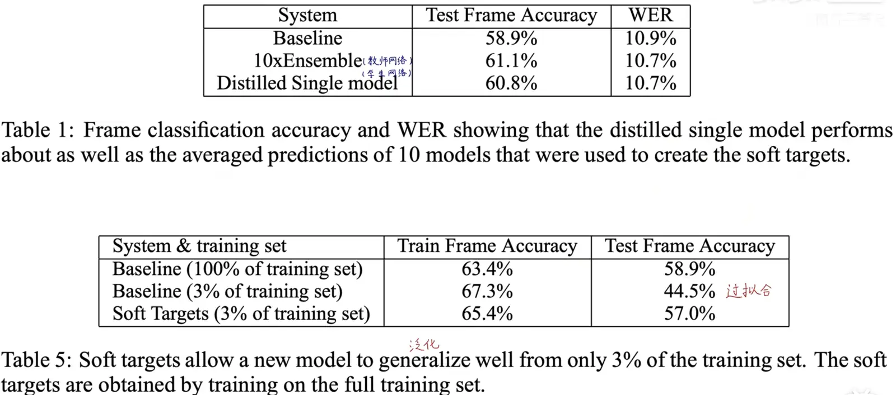
还在语音识别数据上进行了测试，发现蒸馏之后效果也是非常好，你可以把一个单个模型集成十倍，来构建一个教师网络，也可以用这个教师网络训练一个更小的学生网络，性能非常接近。 用soft targets去训练，而不是用hard label去训练，还有一个额外的好处，它可以防止过拟合，比如说当你用非常少的数据集，就是原来数据的百分十3去训练一个网络，会发现结果过拟合。在训练集上准确率高，在测试集上准确率低，但是如果用soft targets去训练一个网络，就算只用了百分之3的样本，效果仍然不错，可以有效的防止过拟合。 如果出现了过拟合，就是第二种情况，就得进行早停，drop out正则化，一系列防止过拟合的操作。需要密切监视训练过程中测试集准确率的变化，如果先增后降，就得在最高的时候早停early stopping。但是用soft targets去训练就不需要，是一直在增加直到收敛，不会出现先增后降的情况。知识蒸馏的应用场景
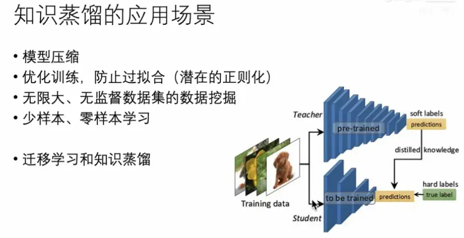
无限大、无监督数据集的数据挖掘 是指把海量的，没有标注的图片喂给教师网络，每个图片可以直接输入到教师网络获得预测结果，预测结果就可以用来训练学生网络。将预测结果教给学生网络，这时没有hard labels，只有soft labels，但这样也能起到知识蒸馏的作用。 迁移学习 是指把一个领域训练的模型让它泛化到另一个领域。领域之间的迁移。 知识蒸馏 是指把一个模型的知识迁移到另一个模型上。通常是大模型迁移一个小模型。模型之间的蒸馏。
知识蒸馏背后的机理
论文：Does Knowledge Distillation Really Work? When Does Label Smoothing Help? Is LABEL SMOOTHING TRULY INCOMPATIBLE WITH KNOWLEDGE DISTILLATION: AN EMPIRICAL STUDY 深度学习号称是炼丹侠和调参侠， 为什么知识蒸馏有用：
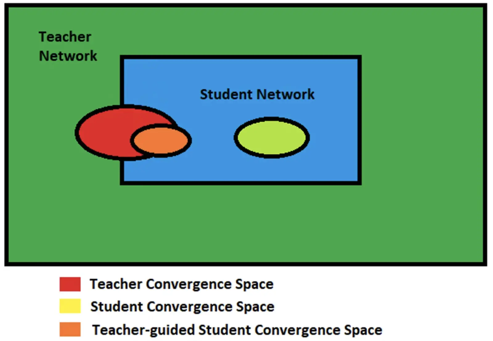
绿色是教师网络的求解空间，表达能力和拟合能力比较强，蓝色是学生网络，模型比较小，所哟表达能力拟合能力比较差，而且是被包含在教师网络里。假设训练教师网络之后，教师网络收敛到红圈里面，单独训练学生网络，不蒸馏（仅hard label），学生网络会收敛到金黄色的圈，金黄色的圈子和红圈有一定距离。加上蒸馏（橙黄色的圈）以后，教师网络就会引导黄圈，告诉他怎么去收敛，最终收敛到橙圈里，与红圈越近，性能越好。橙圈是原来教师网络收敛空间的一个子集，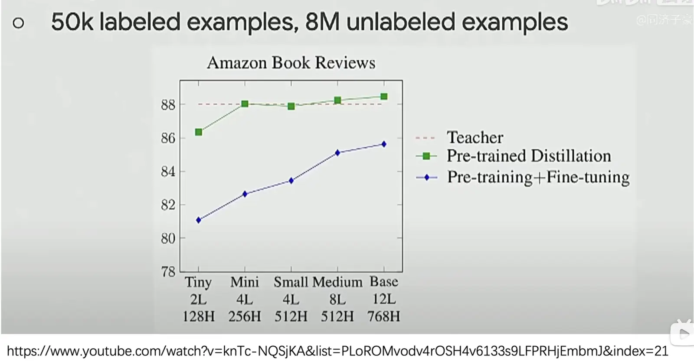
BT大模型的作者，对BT做了一个知识蒸馏的实验，效果也是非常不错。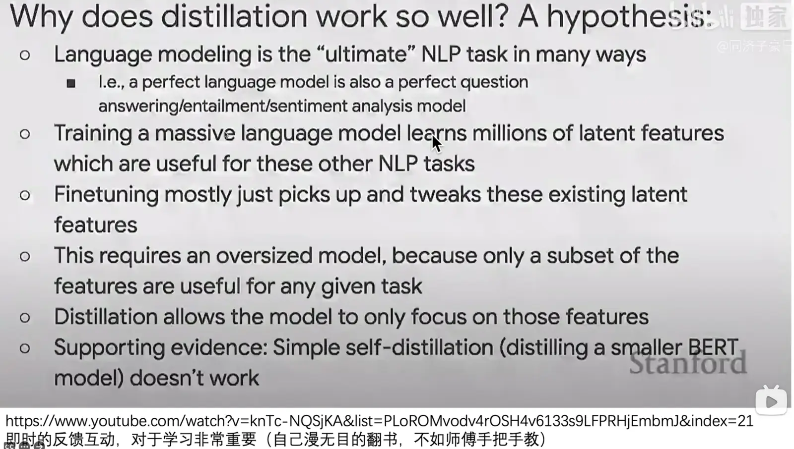
知识蒸馏为什么有用？ BT是一个大规模的语言模型，语言模型又是所有自然原理的一个基石（基准模型），一般是先训练一个语言模型，然后把这个语言模型进行迁移学习，泛化微调到其他的自然语言处理的任务上，第一步其实是训练了很多冗余的特征，迁移和微调就是把冗余的特征里挑出有用的来进行泛化和迁移，怎么能从冗余的海量特征中挑出有用的，就需要模型足够大，如果不蒸馏，小模型不能学习到要迁移泛化领域的知识。知识蒸馏的一个作用是与其漫无目的去翻书，不如师傅书把手教Soft targets VS label smoothing
还有一种处理教师网络预测结果的方法，label smoothing 图源
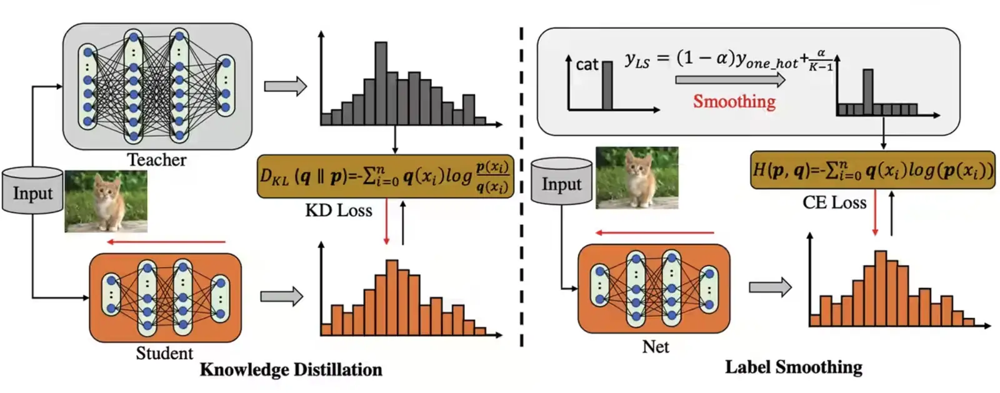
原来知识蒸馏之后，各个类别的概率是不一样的。也可以只保留正确概率，其他类别抹成一个常数，即label smoothing。不科学，因为这样丢失了信息，特别是非正确类别之间的相对大小。 论文：Rethinking the Inception Architecture for Computer Vision 主要是为了防止网络对某一个类别过度自信，会导致一个类别的网络输出的logit倾向于正无穷，就是过分自信，为了防止，所以给其他类别也赋予一个常数的概率。知识蒸馏研究方向
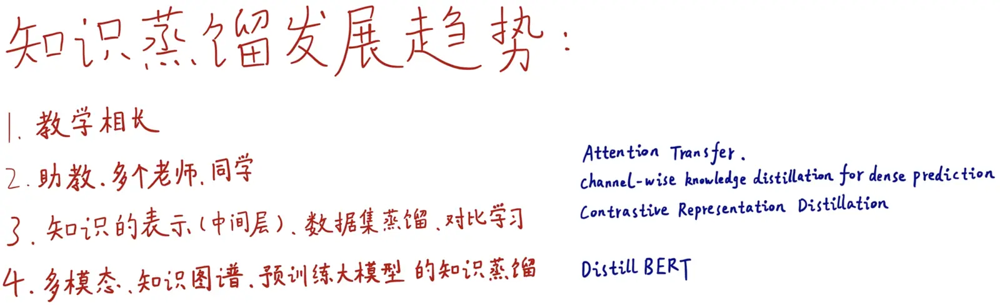
1、教学相长：都是老师帮学生，那学生能不能帮助老师成长 2、引入助教，多个老师、多个同学 3、刚才的知识只通过soft targets来表示，只是网络最后一层的预测结果，网络的中间层是不是也可以解刨出来进行知识蒸馏，例如，如下图所示，让学生网络的第一层模拟教师网络的第五层，让学生网络的第二层模拟教师网络的第十层，这样，老师不仅把最后结果告诉你，也把对这个问题的思考告诉学生网络；还可以对数据集进行蒸馏，对比学习进行蒸馏 4、多模态：既有视觉又有文本又有语音怎么蒸馏，对知识图谱进行蒸馏，对预训练大模型进行知识蒸馏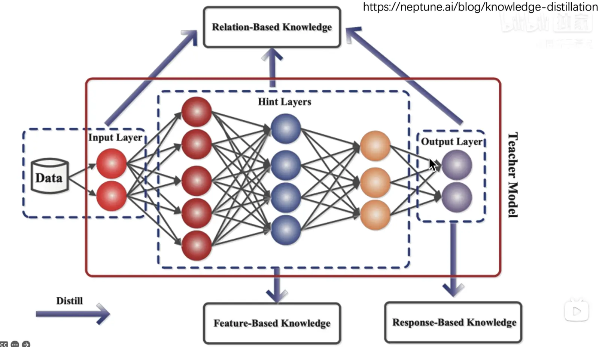
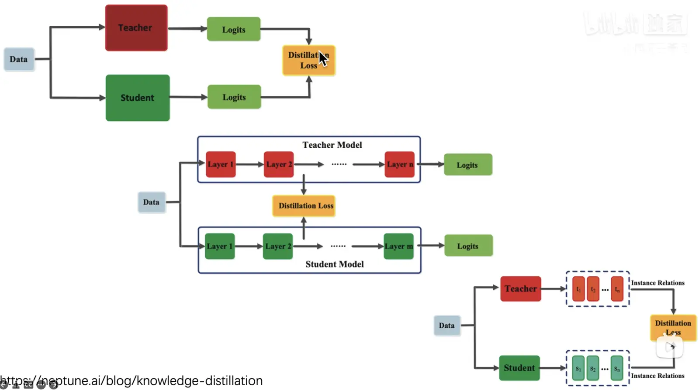
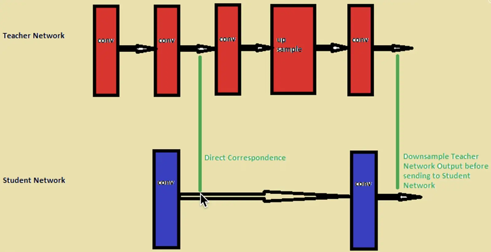
博客： https://devopedia.org/knowledge-distillation https://peerj.com/articles/cs-474/知识蒸馏代码库
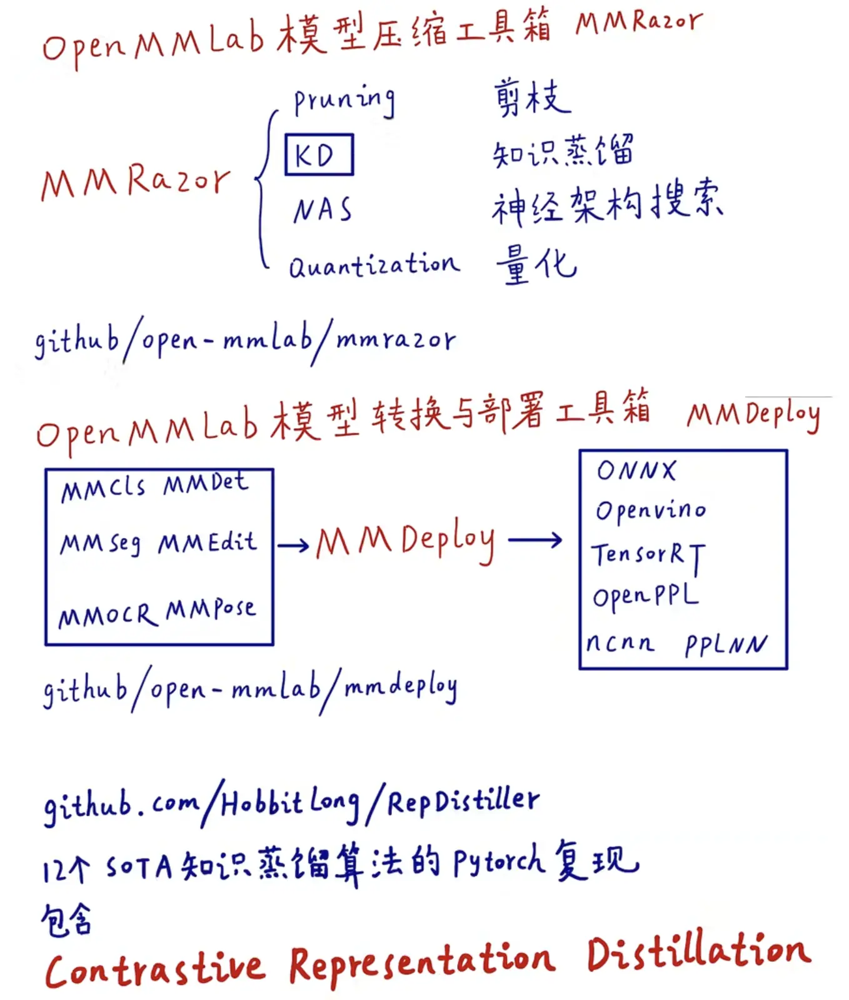
模型压缩工具箱MMRazor开源库： https://github.com/open-mmlab/mmrazor 包括剪枝，蒸馏，神经架构搜索和量化。 模型转换与部署工具箱MMDeploy开源库： https://github.com/open-mmlab/mmdeploy 12个SOTA知识蒸馏算法的pytorch复现：https://github.com/Hobbitlong/RepDistiller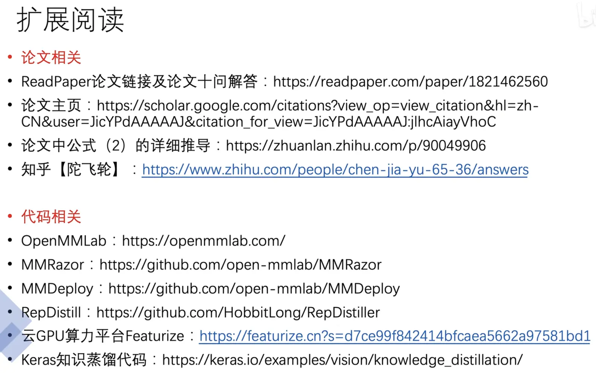
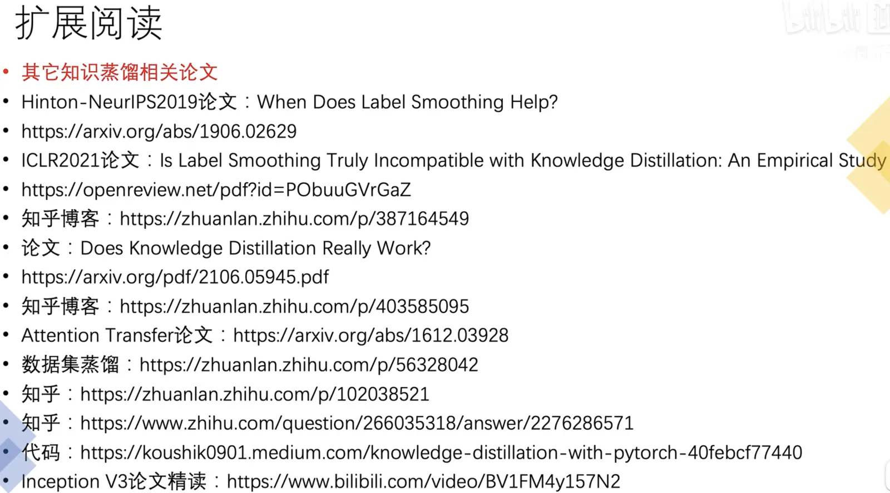
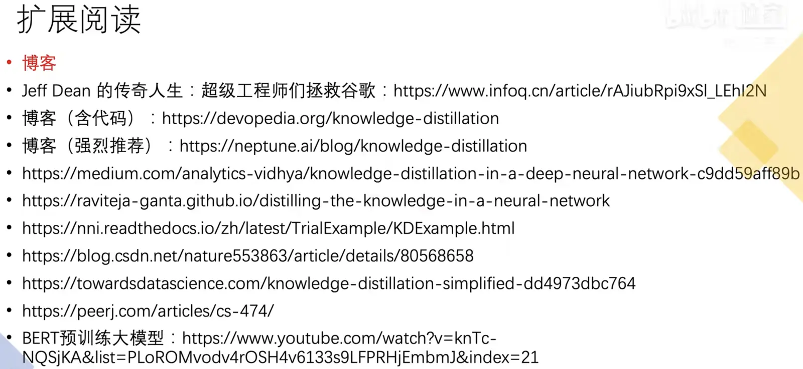
论文精读
知识蒸馏是深度学习人工智能模型压缩领域非常重要的方法。 预训练大模型是未来发展的未来趋势。 Distilling the Knowledge in a Neural Network——知识蒸馏开山之作 NIPS 2014
相关概念&论文摘要
知识蒸馏的目的
知识蒸馏是一种轻量化神经网络的方法，和权值量化、剪枝算法等同属一个流派，主要思想都是压缩已训练好的模型。 其他轻量化神经网络、移动端/终边端边缘计算的技术路线如下：
教师网络和学生网络
知识蒸馏的结果是将一个已经训练好的大体量模型压缩为一个性能良好的轻量化模型。压缩前的大模型称为“教师网络”（teacher），压缩后的小模型称为“学生网络”（student）。 The knowledge of a large ensemble of models can be transferred to a single small model.
本文主要内容
本文针对深度学习的轻量化神经网络问题，提出基于模型压缩的知识蒸馏方法，在MNIST数据集上取得可喜的性能，并应用于商业语音识别模型中。此外，还提出了一种新的模型集成范式（选读）。
知识蒸馏核心算法
算法
问题分析
我们的目标是将大模型的知识迁移到小模型中。那么模型中的“知识”具体是什么呢？ 通常认为模型的参数代表知识，但是参数无法迁移，因此需要更加隐式的知识——一种观点是各个类别概率之间的相对大小。相对大小包含了类间关系等更多的隐式信息。 多分类交叉熵损失函数，因为针对每个标签可以给出它属于各个类别的具体概率（而非简单的0-1），因此有助于表示不同类别概率的相对大小。 多分类交叉熵损失函数需要最大化似然概率（所有分类正确）。
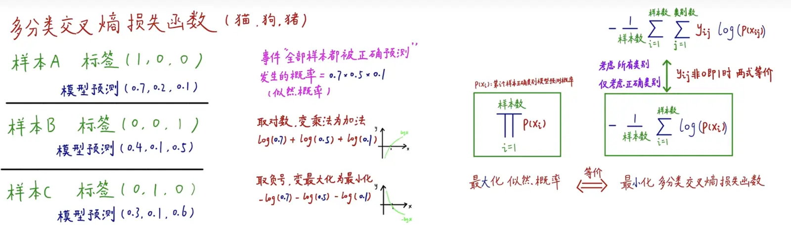
数学表示和转化如下：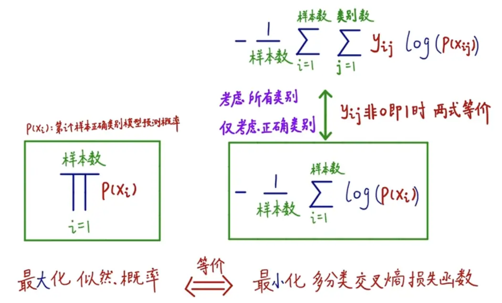
可知最大化似然概率和最小化多分类交叉熵损失函数是等价的。 为了让学生网络拥有良好的泛化性能，必须学到教师网络中的核心“知识”。思路
参考思路：直接将教师网络预测出的结果作为标签，供学生网络训练。 这种由教师网络生成的标签称为soft targets。相比直接的人工标注，soft targets包含了各个类别的概率，隐含了概率的相对大小、相似性等信息。这种方法学生网络的交叉熵损失函数形式如下：
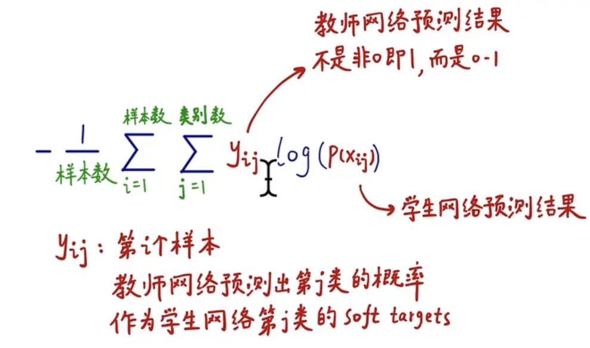
当类别差别较大时，正确类别和错误类别、错误类别之间概率可能出现相差几个数量级的情况。这时会出现置信度很低（如10-7或10-9）的类别，过低的置信度无法表示这些类别之间的相似性。这就需要使置信度的分布更加均匀（所谓soft），不要出现大概率类别和小概率类别集中在两端的情况（所谓hard）。 这种思路的总损失函数由两部分组成：一是soft_loss，表示对教师网络中知识的学习效果；另一种是hard_loss，表示分类效果。
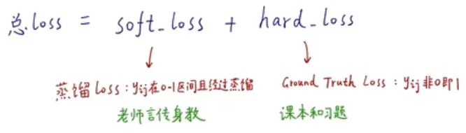
示例如下：
计算学生网络的softmax计算结果和教师网络产生soft target之间的误差即得到soft loss：
知识蒸馏算法
（1）T参数 softmax操作：
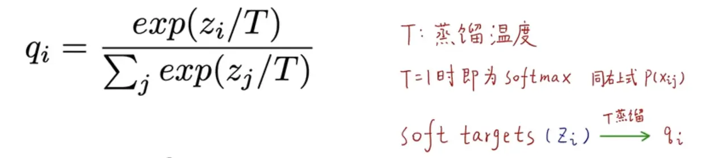
T是softmax中指数的分母部分，不同T值得到的类别softmax之间的区别如下图：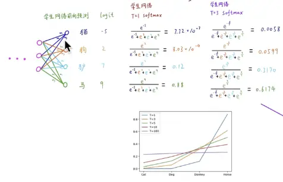
可见T值越大，越能反映类间的相似性；T值越小，极大概率类别和极小概率类别的差距越明显。 （2）算法结构 上图很清晰地说明了知识蒸馏的算法结构。前面已经知道，总损失=soft_loss+hard_loss。soft_loss的计算方法是增大soft_max中的T以获得充分的类间信息，再计算学生网络softmax和soft target之间的误差（二者T相等）。Hard loss选择较小的T，直接计算分类损失。二者共同构成训练阶段的总损失。 测试阶段只有分类任务、没有学习任务，因此使用hard loss作为损失函数。知识蒸馏的特例
当T很大且logit均值为0时，经数学推导可知蒸馏等价于求最小均方误差。 但是T并非越大越好，过大的T会导致各个类别概率差别很小。过大或过小的T都是不利的，T的值同样值得斟酌。
实验
基于MNIST的实验
同样的测试集，经过充分训练的教师网络只有67次分类错误，不使用知识蒸馏的学生网络犯了146个错误，使用知识蒸馏（T=20）的学生网络犯了74个错误。可见知识蒸馏的效果。 若学生网络没有见过平移样本，但是教师网络使用了平移样本，那么学生网络可以通过知识蒸馏习得平移不变性。 若在学生网络的训练中去掉数字“3”，测试集中包含“3”，仍能保持一定的正确率（包括识别“3”的正确率），因为教师网络学习过这个类别。正确率为什么降低？经过实验，发现学生网络训练过程中没有出现过的类别偏置较低。
语音识别
DNN语音识别模型 当前主流语音模型是用DNN把声波文件转成隐马尔科夫模型的状态转移链，语音转文字的任务是应该尽可能的既符合声音的特征，也符合的模型